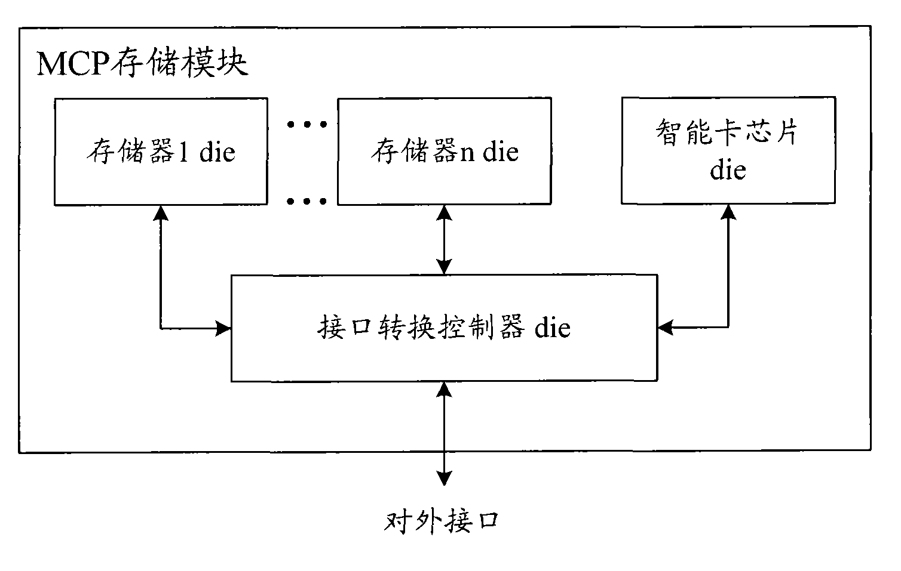

发明名称--多芯片封装存储模块
| 申请号 | CN200810116009.3 | 申请日 | 2008.07.01 | ||
| 公开（公告）号 | CN101303885A | 公开（公告）日 | 2008.11.12 | ||
| IPC分类号 | G11C7/10 | 申请（专利权）人 | 普天信息技术研究院有限公司; | ||
| 发明人 | 杨光敏;廖泉;曹会扬; | 优先权号 |
摘要:
本发明公开了一种多芯片封装(MCP)存储模块。本发明中的MCP存储模块中不但封装有用于存储的若干类型的存储器，还封装有接口转换控制器和智能卡芯片，其中，智能卡芯片能够实现智能卡安全相关业务，而接口转换控制器则能够实现外部通过对外接口与若干类型的存储器以及智能卡芯片交互时的接口规范转换，使得MCP存储模块不仅限于存储功能，实现了功能扩展。而且，由于接口转换控制器能够实现接口规范转换，因此，本发明中的MCP存储模块所具有的对外接口可以与若干类型的存储器以及智能卡芯片一一对应，较佳地也可仅具有较少的对外接口，比如一个或者两个，从而可以减少MCP存储模块的对外接口管脚数量。
摘要附图:
